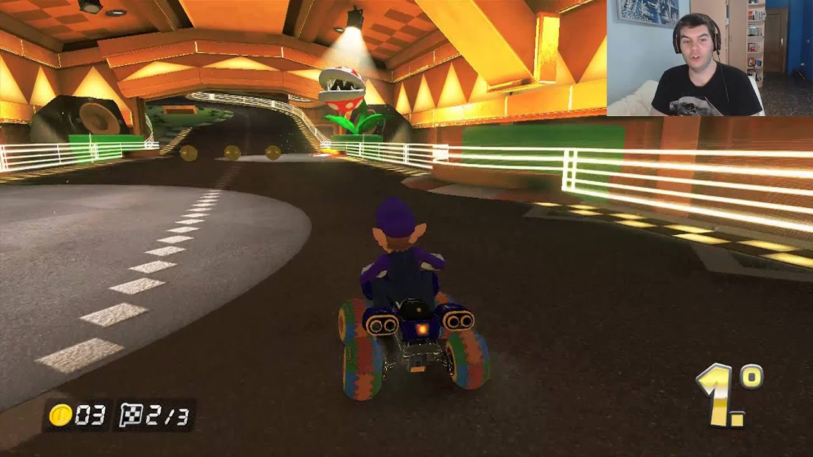
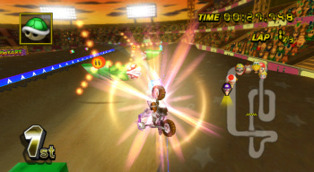

Mario Kart™ 8 Deluxe
Descarga MARIO KART 8 para PC en Español Calienta motores y prepárate para la versión definitiva de Mario Kart 8, en la que podrás jugar donde y cuando quieras! Compite con tus amigos en carreras o en el modo batalla, que ahora incluye circuitos nuevos y otros ya conocidos. Juega en la misma consola y en 1080p participando en partidas de hasta 4 jugadores en el modo televisor.
Todos los circuitos de la versión de Wii U, incluyendo el contenido descargable, están disponibles. Además, ¡los inklings aparecen como personajes invitados junto con otros personajes de juegos anteriores, como el Rey Bú, Huesitos y Bowser Jr.!
 